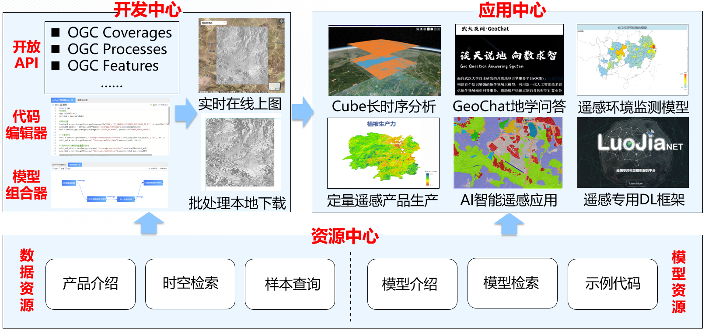

OGE瞄准“数字地球”时空信息服务需求，研究全球时空观测数据组织和管理方法，构建高性能地理分析和人工智能分析模型，提出全球时空数据知识服务技术，建立数据就绪、分析就绪、决策就绪型孪生地球引擎服务体系，研发孪生地球引擎服务平台，构建时空信息基础设施，服务于数字孪生城市建设，并进一步地为自然资源管理、城市治理、公共服务、智慧交通、灾害救援、生态建设等提供可控的地球时空信息基座。

OGE平台支持栅格数据、矢量数据和表格数据的联合分析。平台内存储了Landsat系列产品、Sentinel系列产品、MODIS系列产品、高分系列产品、珞珈一号系列产品、全球DEM产品、DOM产品和GLASS系列产品共计_景数据，数据量共计50TB+。所有栅格数据均以金字塔的形式构建了多尺度图像序列。OGE还提供了涵盖场景分类、目标检测、地物分类、变化检测和三维多视样本数据的共计87个深度学习样本数据集。平台同时还支持用户上传并使用自己的栅格和矢量数据，作为平台内数据的补充。
平台内Landsat数据共有7000余景，包含了Landsat8，Landsat9数据产品，涵盖了level 1和level 2两个级别，空间分辨率为30m，时间范围为2023年5-8月份，空间覆盖范围为中国区域。其中Landsat8搭载了先进的操作陆地成像仪（OLI）和热红外成像仪（TIRS）,共提供了十一个波段的数据。这些波段覆盖了可见光、近红外、短波红外和热红外等光谱范围。Landsat 9搭载的传感器包括OLI-2 (Operational Land Imager-2) 和TIRS-2 (Thermal Infrared Sensor-2)，提供的波段跟Landsat8相似。平台内的Landsat数据均由USGS获取（https://earthexplorer.usgs.gov/）。
平台内Sentinel-2数据共有4000余景，数据级别为level 1级，时间范围为2023年5-8月份，空间覆盖范围为中国区域。Sentinel-2卫星搭载的传感器具有13个波段，每个波段的分辨率不同（从10米到60米），这些波段涵盖了可见光、近红外、短波红外和热红外等多个光谱范围，为地表覆盖分类、植被监测、土地利用评估、水资源管理等应用提供了丰富的信息。平台内的Sentinel-2数据均由ESA获取（https://dataspace.copernicus.eu/）。
平台内的GF数据共有4000余景，包括GF-1和GF-6 WFV（Wide Field View）多光谱数据，数据级别为level 1级，时间覆盖范围主要为2023年5-8月，空间覆盖范围主要为中国区域。其中GF-1 WFV数据由高分1号卫星（2013年4月26日发射）获取，其搭载了4台16m分辨率多光谱宽幅（wide filed view，WFV）相机，4台相机组合幅宽可达800km，重访周期可达4天。GF-6 WFV数据由高分6号卫星（2018年6月2日发射）获取，其搭载了1台16m分辨率860km幅宽WFV相机。GF-1和GF-6 WFV传感器参数如下表所示，平台内的GF-1和GF-6数据由中国资源卫星中心获取（https://data.cresda.cn/），并经过辐射定标、正射校正、几何配准等一系列完整的预处理流程后上传至数据库。
平台内的MODIS数据共有1000余景，包含了MOD09A1、MOD13Q1等数据产品，时间覆盖范围主要为2023年5-8月，空间覆盖范围主要为中国区域。其中MOD09A1数据是地表反射率产品，反映了不同波段下地表的光谱特征和地表覆盖类型，其数据级别为level 2级，空间分辨率为500米，时间分辨率为每8天一次观测。MOD09A1数据适用于各种地表监测和环境研究领域，也能与Landsat、Sentinel-2等对地观测数据形成协同观测。MOD13Q1数据是植被指数数据产品，主要包括地表的归一化植被指数（NDVI）值。NDVI是一种反映植被绿度和生长状况的指标，通常由红光波段和近红外光波段的反射率计算得出。其数据级别为level 3级，空间分辨率为250米，时间分辨率为每16天一次观测。MOD13Q1数据适用于植被监测、生态环境研究、农业生产监测等领域。平台内的MODIS数据均由EARTHDATA（https://lpdaac.usgs.gov/）获取。
平台内的DEM数据包含了完整的ASTER_GDEM_DEM30和ALOS_PALSAR_DEM12.5两种数据产品。其中ASTER GDEM DEM30数据是由日本宇航局 (JAXA) 的 ASTER (Advanced Spaceborne Thermal Emission and Reflection Radiometer) 传感器获取的全球数字高程模型数据产品，具有30米的水平分辨率。ALOS PALSAR DEM12.5数据是由日本宇航局 (JAXA) 的ALOS (Advanced Land Observing Satellite) PALSAR (Phased Array type L-band Synthetic Aperture Radar) 雷达获取的全球数字高程模型数据产品，具有12.5米的水平分辨率。 除了上述常见的对地观测数据外，OGE平台还集成了国内高校自研的数据产品，包括全球陆表特征参量（GLASS）数据产品，其涵盖了叶面积指数（LAI），反照率（Albedo）,发射率（BBE），光合有效辐射（PAR），长波辐射（LW）等数据，为研究全球环境变化提供了可靠的依据，能够广泛应用于全球、洲际和区域的大气、植被覆盖、水体等方面的动态监测，并与气温、降水等气候变化表征参数结合起来，应用于全球变化分析。以及由武汉大学领衔，联合长光卫星技术有限公司研制珞珈一号卫星生产的夜光遥感数据，其提供了城市夜间照明的亮度和分布情况，反映城市的发展水平和人口密度等信息，适用于城市照明、人口分布等宏观尺度的研究和应用。
OGE平台提供了栅格计算、矢量计算、空间分析、时空立方体专题算子和碳排放计算专题算子等多种计算算子，支持以Python脚本的方式或可视化的模型组合器的方式调用。OGE平台提供了实时计算和批计算两种计算模式，在实时计算中，计算会实时地进行，并显示在地图上供用户查看，而在批计算中，则会在计算完成后提供给用户计算结果，供用户下载后本地使用。 目前，OGE内算子包含：